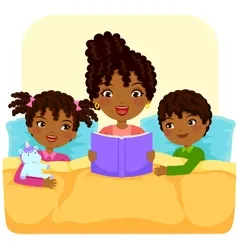

KNOW YOUR
AKAN NAME
The Akan people of Ghana frequently name their children after the day of the week they were born and the order in which they were born. These "day names" have further meanings concerning the soul and character of the person. Middle names have considerably more variety and can refer to their birth order, twin status, or an ancestor's middle name. This naming tradition is shared throughout West Africa and the African diaspora. During the 18th–19th centuries, enslaved people in the Caribbean from the region that is modern-day Ghana were referred to as Coromantees. Many of the leaders of enslaved people's rebellions had "day names" including Cuffy, Cuffee or Kofi, Cudjoe or Kojo, Quao or Quaw, and Quamina or Kwame/Kwamina. Most Ghanaians have at least one name from this system, even if they also have an English or Christian name. Notable figures with day names include Ghana's first president Kwame Nkrumah and former United Nations Secretary-General Kofi Annan.
